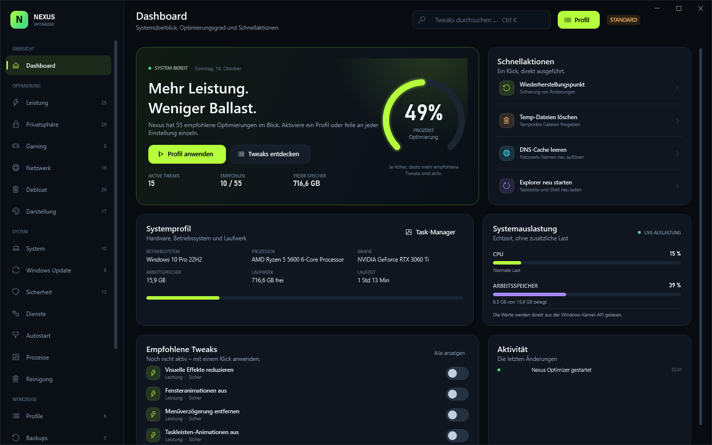

152 tweaks. Nine categories.
Performance, privacy, gaming, network, debloat, appearance, system, security and Windows Update — plus 41 actions and app removals.
- Exact state detection
- Risk levels for critical changes
Windows 10 & 11 · v1.0.0 · 100% local
Nexus Optimizer is a complete, local tweaking panel for Windows: 152 tweaks, six curated profiles, 28 services, cleanup and 18 tools — with a real backup before every change.

Features
Not ten billion features — over 200 functions in one dark, quiet interface. Every change is reversible.
Performance, privacy, gaming, network, debloat, appearance, system, security and Windows Update — plus 41 actions and app removals.
Every successful change stores the previous registry or service state as JSON. Restore one change or all of them in a click.
Clean & Fast, Gaming Focus, Privacy Shield, Lean Machine, Maximum Performance and Security Hardening — or build your own.
28 curated services with start type and start/stop control, plus autostart entries from the registry and startup folders.
15 cleanup targets with real sizes, a live process monitor and 18 Windows tools — including God Mode.
Modules
Every module is included in the single download. Filter by area to explore the panel.
Showing all 18 modules.
Optimization score, system profile, live CPU/RAM, recommendations, activity and quick actions.
Visual effects, timeouts, prefetch, SysMain, search, priorities, power plan and NTFS.
Telemetry, ad ID, activity history, location, camera, microphone, Copilot, Recall and ads.
Game Mode, Game Bar/DVR, HAGS, GPU priority, Xbox services and fullscreen optimizations.
IPv6, LLMNR, QoS, SMBv1, RDP, Nagle, DNS providers, plus flush, renew and reset actions.
Consumer features, suggestions, OneDrive and 25 preinstalled apps — removable per user.
Dark mode, Explorer, taskbar, seconds, Snap Assist, NumLock and mouse settings.
Long paths, developer mode, fast startup, hibernate, UAC desktop and crash dumps.
Autorun, SmartScreen, WDigest, core isolation, firewall, Defender and SMB signing.
Driver updates, auto-updates, P2P delivery, restart prompts and cache/reset actions.
28 curated Windows services, grouped and filtered, with start type and start/stop control.
Registry Run entries and startup-folder items, per user and system, with enable/disable.
Live process list with RAM, threads, handles, search, kill and a direct Task Manager link.
Scan 15 targets with real sizes, select what to remove and clean safely — admin hints included.
Six curated profiles, custom profiles, import/export and a progress view while applying.
JSON history with the previous state, restore individual changes or everything, plus restore points.
18 Windows tools in one place, including God Mode, system info, network resets and more.
Five accent colors, animations, confirmations, backup behavior, data folder and activity log.
All 18 modules are included in the single download. Download Nexus Optimizer
Screenshots
Dark, quiet and dense where it matters. These are real screenshots of the app.
How it works
Use the installer or the portable EXE. Nexus starts as a standard user; admin rights are requested through UAC only when needed.
Create one from the dashboard. Nexus also writes a JSON backup before every successful change.
Apply a curated profile or toggle individual tweaks. See exactly what changes, then reboot if needed.
Safety
Nexus edits real Windows settings, so it is built around backups and confirmations. No silent changes, no cloud, no hidden telemetry.
Read the safety FAQFAQ
Still unsure? Explore every module above — or download it and see for yourself.
Download and try itYes. The download is free, but Nexus Optimizer requires a license key before it starts. The owner creates keys and invite codes; register in the customer portal with an invite and your key appears there.
The owner generates a one-time invite code and, after registration, a license key in the admin panel. There is no self-signup and no automatic checkout.
Windows 10 from 1903 and Windows 11, 64-bit. .NET Framework 4.8 is required and is included with current Windows 10 and 11 installations.
Some tweaks, services and network changes need elevated rights. Nexus starts as a standard user and offers a UAC restart when needed — it does not silently bypass permissions.
No. The build is unsigned, so Windows SmartScreen may show a warning on first launch. Only run binaries you downloaded from a source you trust.
Yes. Before every successful change Nexus stores the previous registry or service state as JSON. Restore a single change or all of them, and use Windows restore points as an additional layer.
No. There is no cloud, no telemetry and no external API. Settings, profiles, logs and backups are stored under %LOCALAPPDATA%\NexusOptimizer.
The installer installs Nexus Optimizer per user under %LOCALAPPDATA%\Programs\Nexus Optimizer. The portable EXE runs without installation. The installer creates an Apps & Features entry and an uninstaller.
Download
Nexus Optimizer 1.0.0 for Windows 10 and 11. A license key is required. Install it or run the portable EXE — no subscription, no cloud, no telemetry.
License required · Installer 1.3 MB · Portable 0.7 MB · Windows 10/11 x64 · .NET 4.8
SHA-2568AC6F031212130F1EE47CC444892CD2EF1718BAFF871BEFE711769F4B646DE86
Unsigned build — Windows SmartScreen may warn on first launch.